| ARBRE D'HABILITATS |
|---|
| HABILITATS DE SAMURÁI |
|---|
| DESVIACIÓ | EVASIÓ | ||
|---|---|---|---|
| ICONE | HABILITAT | ICONE | HABILITAT |
| 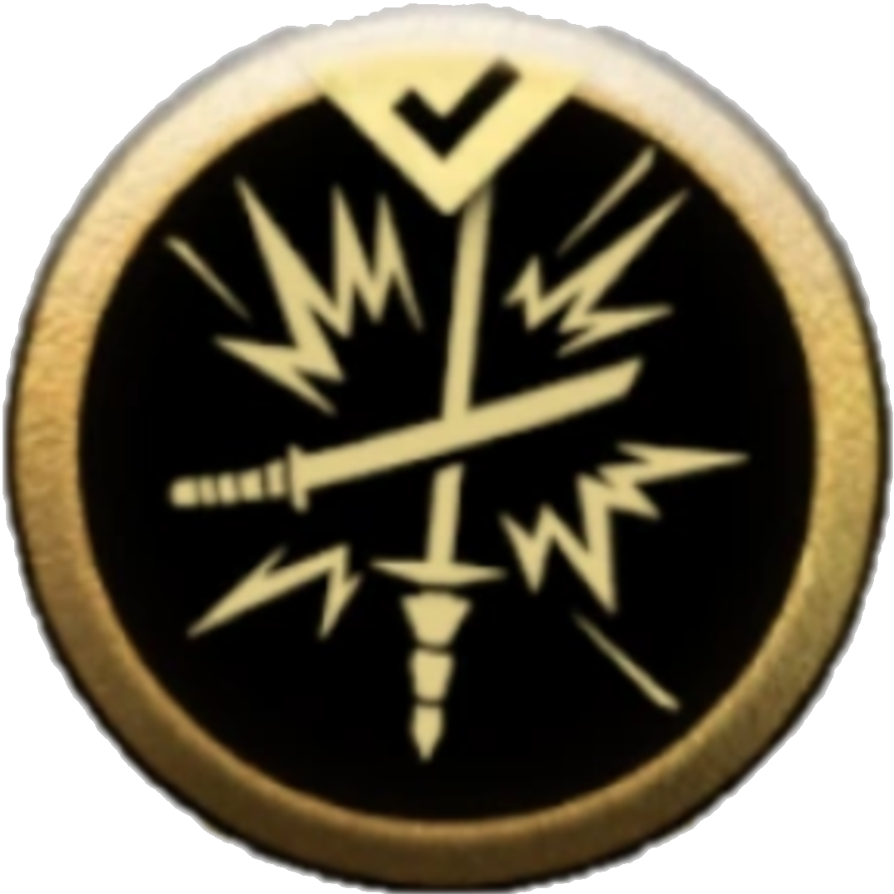 | Desviació Perfecta | |
Evasió Rodant |
| 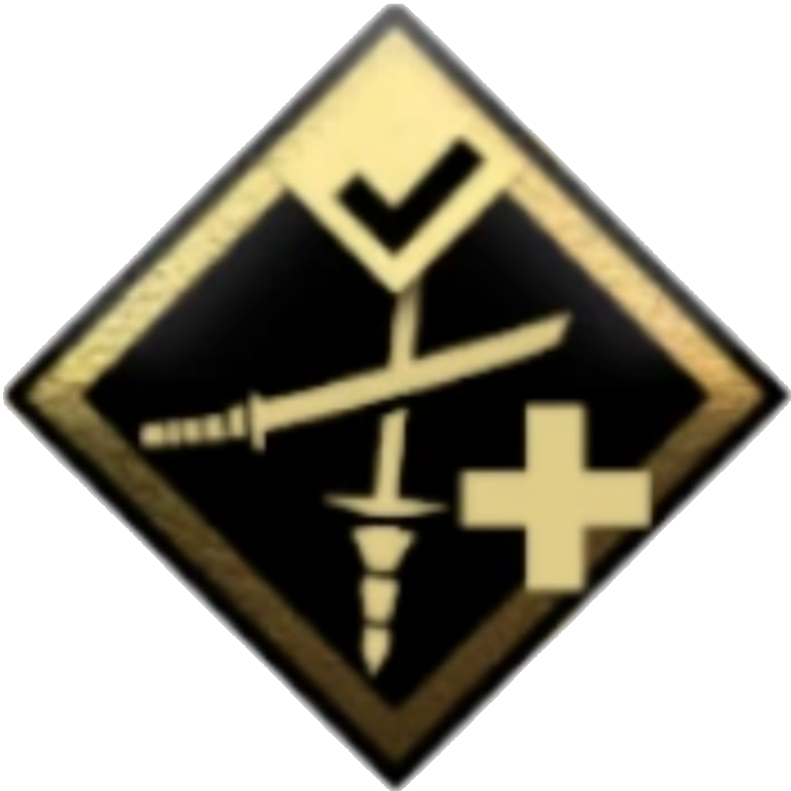 | Desviació Sanadora | |
Tall amb Finta |
| 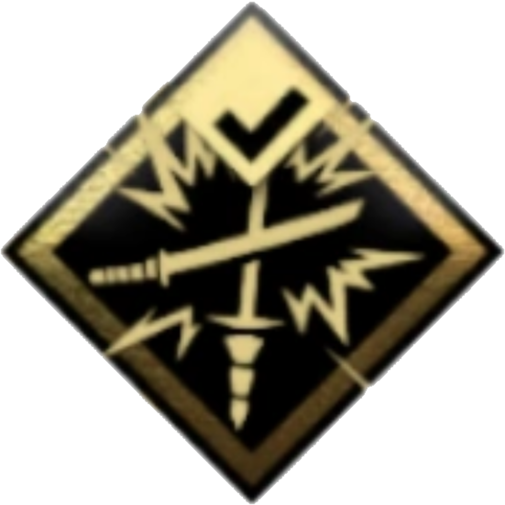 | Desviació d'Espada Inquebrentable | 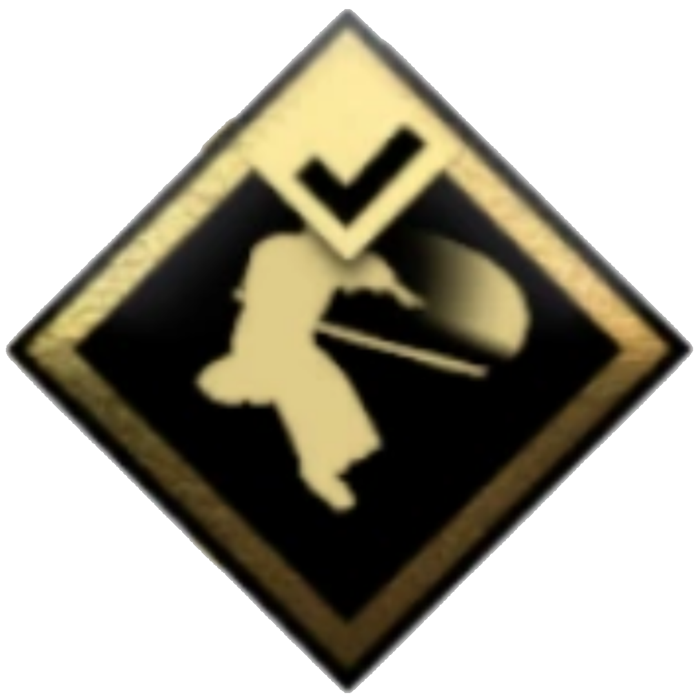 | Atac en Carrera |
| 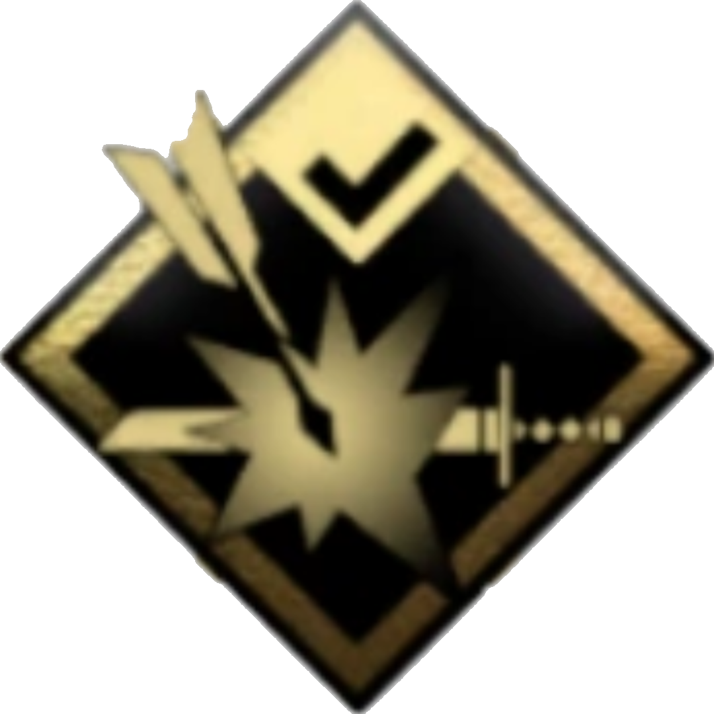 | Desviació de Fletxes | |
Carga d'Espatlla |
| 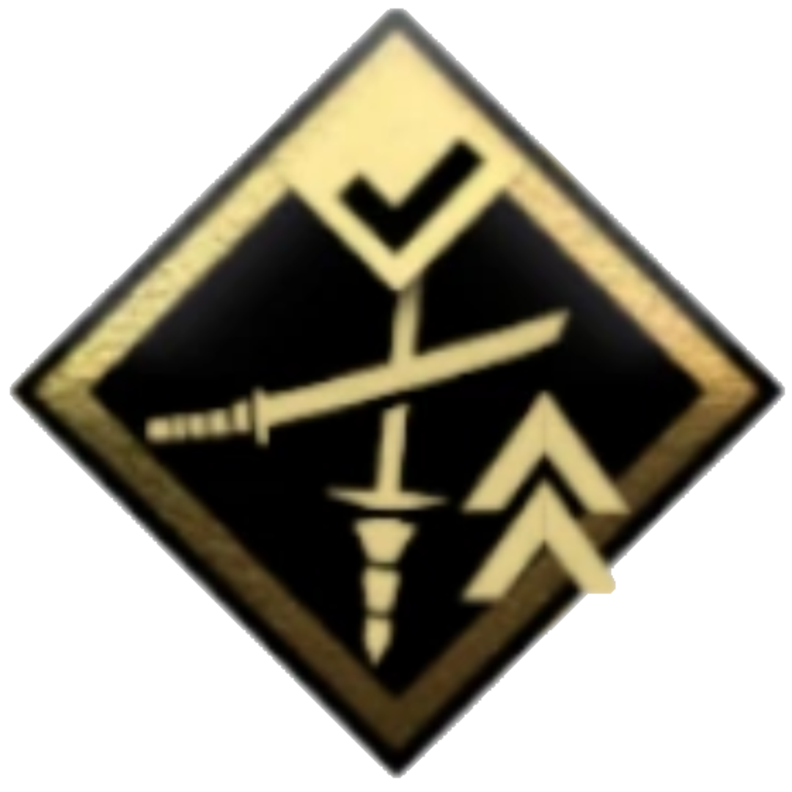 | Desviació de Llança | |
Atac Demorat |
| 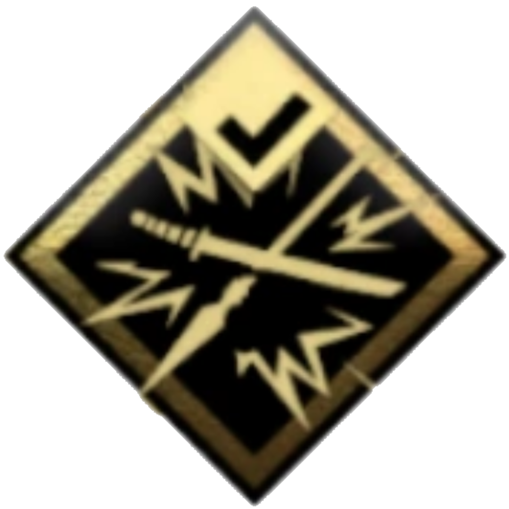 | Desviació Determinant | |
Atac a Cavall |
| 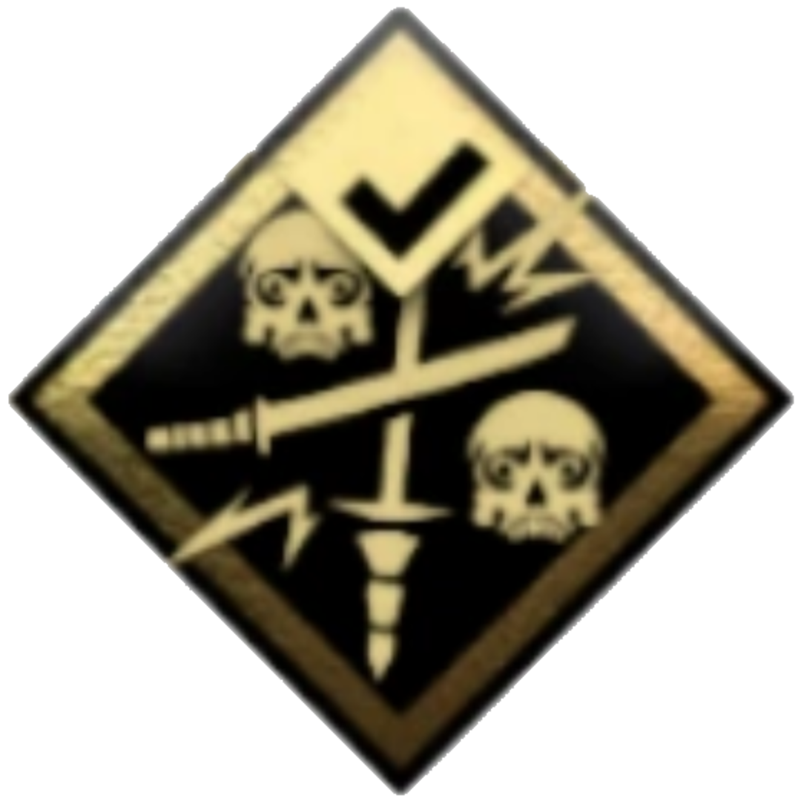 | Desviació Aterradora | |
Esquiva Perfecta |
| MÍTIC | EXPLORACIÓ | ||
|---|---|---|---|
| ICONE | HABILITAT | ICONE | HABILITAT |
| Cop Celestial |  |
Vent de la Salut | |
 |
Dança de la Ira | 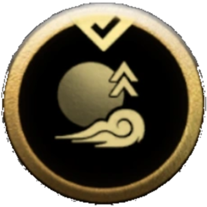 | Vent de la Determinació |
| 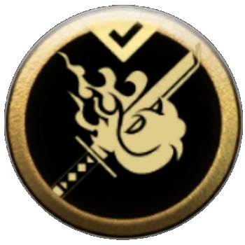 | Cami de la Flama | 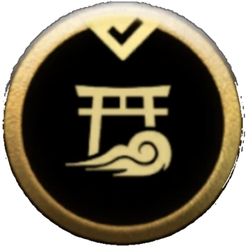 | Vent dels Talismans |
| 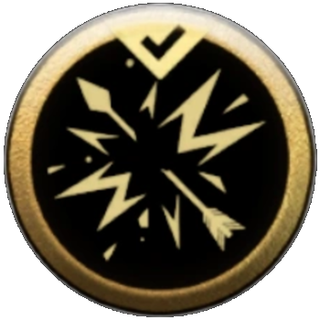 | Fletxa Explosiva | 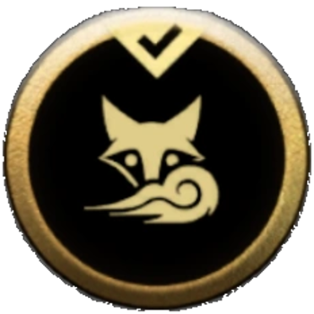 | Vent dels Inari |
 |
Vent Vanitós | ||